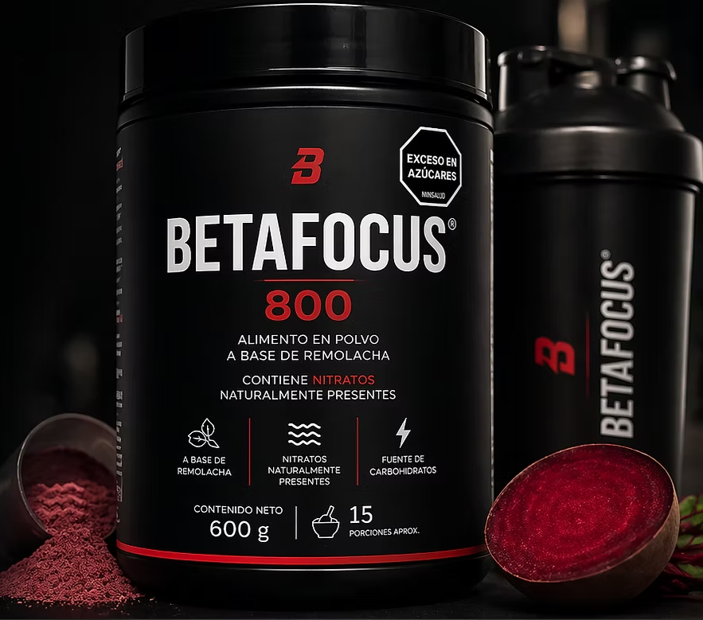

Alimento ergogénico a base de remolacha diseñado para maximizar el rendimiento en deportes de resistencia. Formulado con una dosis clínica exacta de 600 mg de nitratos dietéticos (Categoría A del AIS), induce una potente vasodilatación que incrementa el flujo sanguíneo y la oxigenación muscular. Apoyado por una matriz sinérgica de carbohidratos que optimiza la eficiencia energética, este producto retrasa efectivamente la fatiga y mejora la economía del esfuerzo, entregando resultados respaldados por la ciencia en una presentación de etiqueta limpia y altamente tolerable.
Adquirir por WhatsApp
Lleva tu rendimiento al máximo con el poder de ingredientes 100% naturales a base de remolacha , diseñados para mejorar tu oxigenación y retrasar la fatiga. Su práctica presentación en polvo es fáciles de llevar y de disolver en agua.
Solo prepáralo y consúmelo 2 horas antes de tu actividad física para sentir toda su efectividad durante el entrenamiento o competencia.
Ciencia pura y natural en cada porción. Conoce lo que hace la diferencia en tu rendimiento.
Nuestra dosis clínica exacta de 600 mg se transforma en Óxido Nítrico en tu organismo. Esto induce una vasodilatación natural que mejora el flujo sanguíneo y la oxigenación muscular, retrasando de forma efectiva la fatiga y reduciendo el costo de oxígeno en cada movimiento.
Carbohidratos de asimilación inteligente que te aportan energía sostenida y fácil digestión, sin pesadez estomacal.
Potentes antioxidantes naturales propios de la remolacha que combaten el estrés oxidativo.
Extractos naturales sin sabor a tierra y de disolución instantánea. Llévalo fácil y consúmelo 2 horas antes de entrenar.
Transparencia total en cada porción. Conoce exactamente lo que consumes.
| Nutriente | Cantidad por porción | % VD* |
|---|---|---|
| Calorías (Energía) | 70 kcal (293 kJ) | 3 % |
| Grasas Totales | 0.0 g | 0 % |
| Grasas Saturadas | 0.0 g | 0 % |
| Grasas Trans | 0.0 g | — |
| Sodio | 15 mg | 1 % |
| Potasio | 604 mg | 13 % |
| Carbohidratos Totales | 15.0 g | 5 % |
| Fibra Dietética | 0.5 g | 2 % |
| Azúcares Totales | 6.5 g | — |
| Azúcares Añadidos | 0.0 g | 0 % |
| Proteínas | 1.0 g | 2 % |
| Ingredientes Activos | ||
| Nitratos Dietéticos (NO₃⁻) | 600 mg | ** |
* Valores Diarios con base a una dieta de 2 000 kcal. Sus valores pueden ser mayores o menores dependiendo de sus necesidades energéticas.
** Valor Diario no establecido.
Sencillo, rápido y diseñado para una asimilación metabólica perfecta.
Disuelve 20 gramos de polvo (medida aproximada del dosificador) en 250–300 ml de agua fría o templada (Opcional licuar).
Consume la bebida 2 horas antes de iniciar tu entrenamiento o sesión competitiva para activar los picos de óxido nítrico.
Nuestra calidad se fundamenta en el origen de las materias primas, procesadas bajo los estándares de pureza y bioseguridad más estrictos del país para certificar confianza absoluta en cada lote.
Resolvemos tus dudas sobre BetaFocus.
Se recomienda tomar una porción al día disuelta en agua, preferiblemente 2-3 horas antes del entrenamiento. Cada envase contiene múltiples porciones para un ciclo completo.
Se reportan cambios notables en sus niveles de energía después de la primera ingesta.
BetaFocus está formulado con ingredientes naturales y es seguro para el consumo diario. Algunas personas pueden presentar alergias al producto.
BetaFocus concentra los beneficios de la remolacha (Beta vulgaris) en un polvo soluble de fácil preparación. A diferencia de jugos o cápsulas, nuestra fórmula garantiza la dosis exacta de compuestos activos sin preparación tediosa, además de su etiqueta limpia y clara con ingredientes naturales y un sabor agradable.
Sí, realizamos envíos a todo el territorio colombiano. El tiempo de entrega varía según la ubicación, generalmente entre 2 y 5 días hábiles. Contáctanos por WhatsApp para más detalles.
Conversa directamente con un asesor para agendar tu pedido personalizado con envíos nacionales a toda Colombia de forma segura.
Comprar Directo en WhatsApp